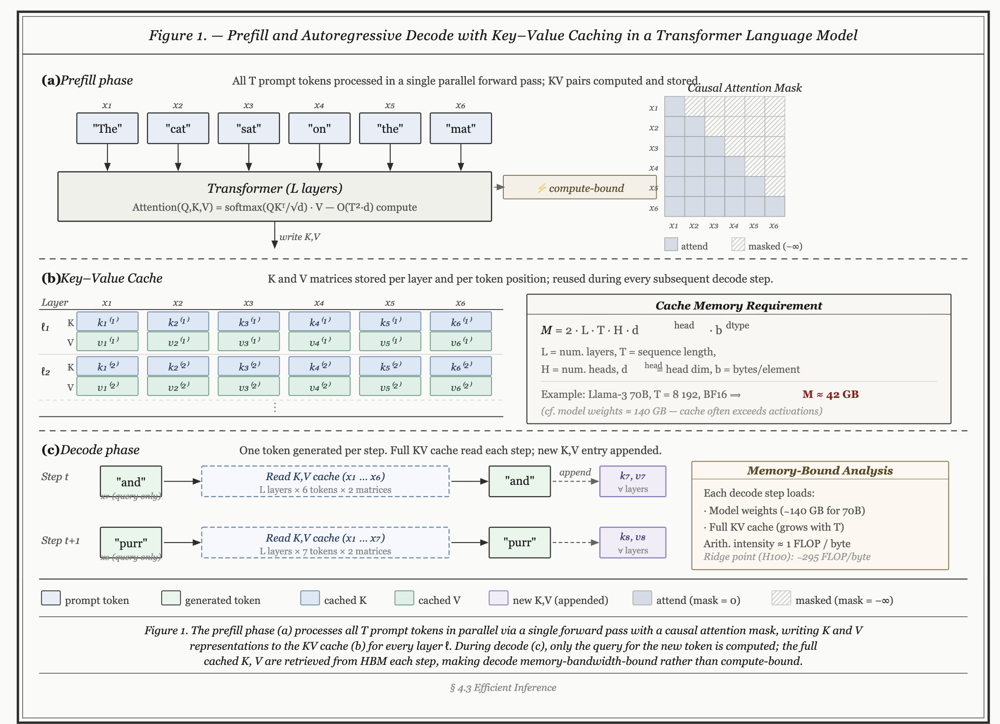
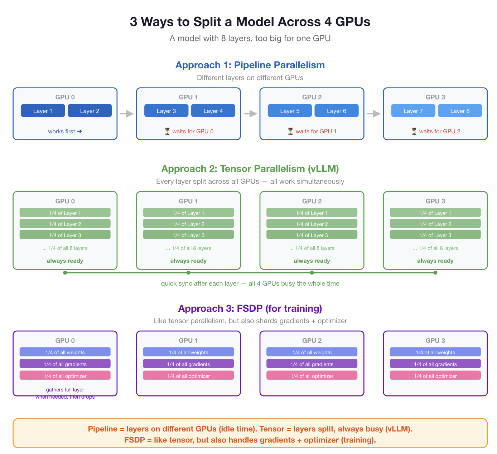
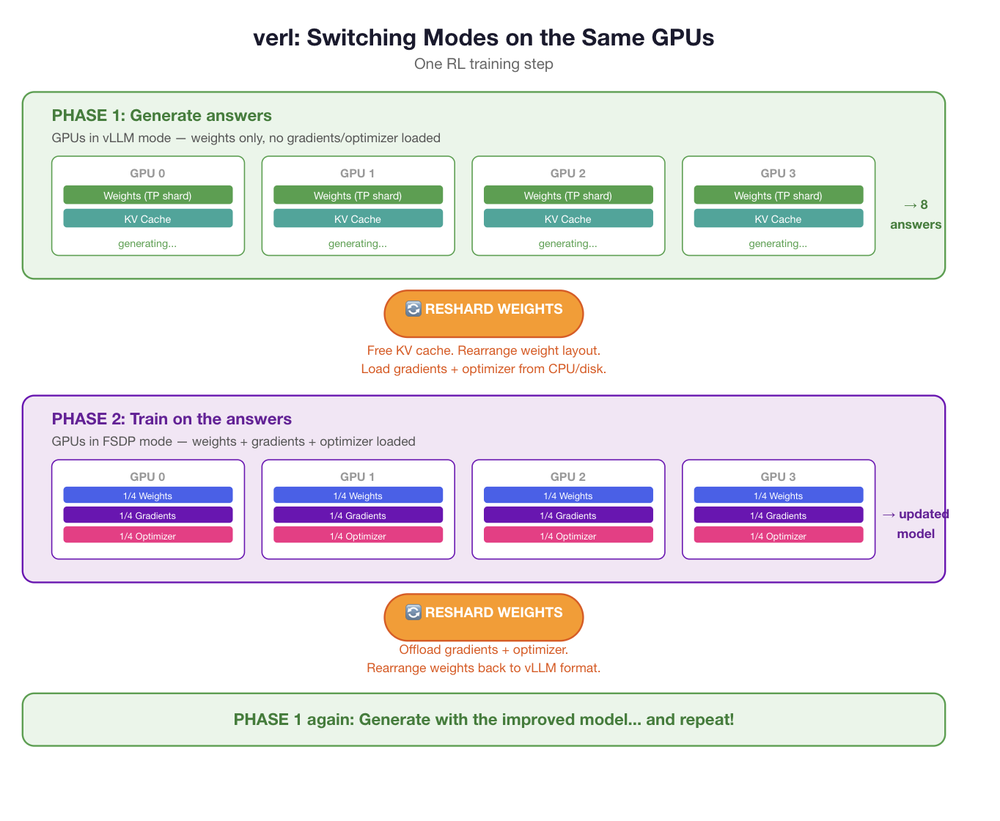
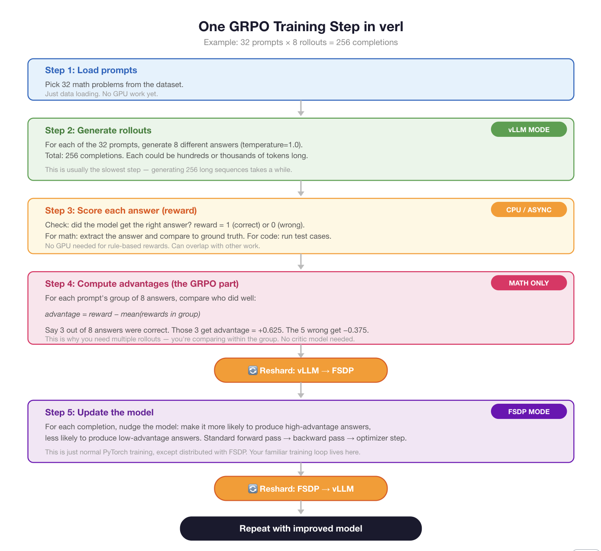
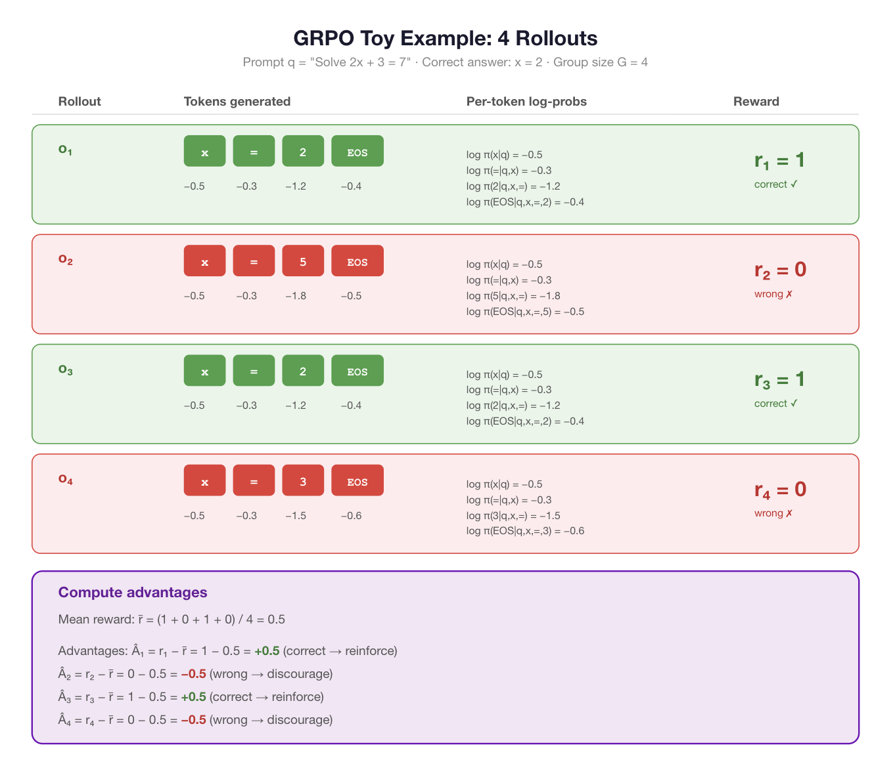
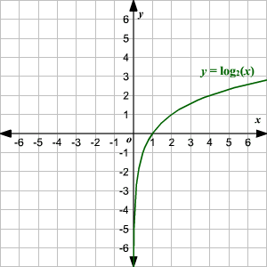

Notes on verl
These are some preliminary rough draft notes on verl.
Quick primer on LLM training and sampling:
Two main steps:
- Prefill (process prompt (context)): input tokens processed in forward pass, producing logits for each input token. attention computed in parallel over entire context, building kv cache.
- compute bound: requires matrix multiply over all T tokens simultaneously → high arithmetic intensity (FLOPs >> bytes)
- Decode (generate next tokens): One token is generated at a time. Each step reads the full KV cache, appends a new KV entry, and samples the next token — inherently sequential.
- memory bound: load full model weights + KV cache for 1 token → almost all time spent on memory reads, not math
Important equation:
- Arithmetic intensity:
\[ \text{Arithmetic Intensity} = \frac{\text{Number of Floating Point Operations (FLOPs)}}{\text{Amount of Data Moved (Bytes)}} \]
This tells you how many compute operations are done for each byte of data loaded from memory. You can use arithmetic intensity to determine if your workload is compute-bound or memory-bound. There’s a threshold value for your specific hardware (for example, on modern GPUs it might be around 10–20 FLOPs/byte, but it depends on the device):
- If arithmetic intensity is greater than that threshold, the operation is compute-bound—your speed is limited by how fast your hardware can do math.
- If arithmetic intensity is less than that threshold, the operation is memory-bound—your speed is limited by how fast you can move data between memory and compute units.
The actual value of the threshold depends on the ratio of your device’s peak compute performance to its peak memory bandwidth.

Introduction to distributed training and inference
- Suppose you have a 32B param model but only 8B params can fit into your gpu memory.
- Thus, you need 4x GPU’s to sample from it. So you must split it up.
- Two ways to do this:
- Pipeline parallelism: split by layers. Layer 1-8 on GPU 0, 9-16 on GPU 1, etc. The input goes through GPU 0 first, then the output gets passed to GPU 1, then to GPU 2, and so on. The problem: while GPU 1 is working on layers 9-16, GPUs 0, 2, and 3 are sitting idle. They just wait their turn. Lots of wasted time.
- Tensor parallelism: each layer itself is split across the gpu’s. 1/4 of layer n is on gpu 1, and so on. This is better since each gpu is constantly working… no need to wait for the previous layers to finish. each computing their piece of the layer, then doing a quick sync to combine results before moving to the next layer. All GPUs are busy all the time. This is what vLLM does.
- FSDP: in fully sharded data parallel, which is often used for training, you also shard the gradients and optimizer states.

Why verl
- We now see that we can use TP for sampling and FSDP for training. But in an RL loop, you need to sample, then do polocy gradient/training. Hence, you need to go back and forth, given some fixed compute requirement. This is where verl comes into play. Naively, you’d buy two separate clusters, one for training and one for inference. But what if you only have one cluster?
You have 4 gpus and need to do:
- Inference: Generate answers → need vLLM mode (weights only, tensor parallel, fast)
- Training: Train on those answers → need FSDP mode (weights + gradients + optimizer, sharded)
These two modes store the weights in different formats and use memory differently. but we have the same 4 gpu’s. Thus, verl introduces modes to switch back and forth.
- Phase 1: Load weights in vLLM format. Generate a batch of answers. No gradients, no optimizer in memory — just weights and KV cache. Fast.
- Phase 2: Reshuffle the weights into FSDP format. Load gradients and optimizer states (from CPU memory or disk). Do the training step — forward pass, backward pass, optimizer update. Model gets a little better. this is important, as this model gets better, the original one from phase 1 becomes stale.

You pay a small cost by switching and sharding between the formats needed for inference and training.
RL loop
In a standard rl loop, you have 5 main steps:

GRPO primer
We will brielfy cover the grpo algorithm used commonly for LLM post-training.
- Your llm will sample a bunch of tokens to form a completion.
Let us define some notation first.
Notation setup:
- \(\pi_\theta\) — the policy (your language model, with parameters \(\theta\))
- \(q\) — a prompt (e.g., “Solve 2x + 3 = 7”)
- \(o_i\) — the \(i\)-th completion (rollout) generated for that prompt
- \(o_{i,t}\) — the \(t\)-th token of completion \(i\)
- \(\pi_\theta(o_{i,t} \mid q, o_{i,<t})\) — the probability the model assigns to token \(t\), given the prompt and all previous tokens
- \(r_i\) — the reward for completion \(i\) (1 if correct, 0 if wrong)
- \(G\) — the group size (number of rollouts per prompt, e.g., 8)
So when the model generates one completion, it produces a sequence of tokens \(o_i = (o_{i,1}, o_{i,2}, \ldots, o_{i,T})\), and at each step it had some probability of picking the token it picked.
- Sampling notation: \(\pi_\theta(o_{i,t} \mid q, o_{i,<t})\) just means “the probability of token \(o_{i,t}\), given that the model has already seen prompt \(q\) and the previous tokens \(o_{i,<t}\).”
- So \(\pi_\theta(\text{"2"} \mid q, \text{"x ="})\) just means: “after reading the prompt and having already generated ‘x =’, how likely does the model think ‘2’ is as the next token?” In the example below, that was 0.30, or in log space, −1.2.
Now let’s make it tiny and concrete.
Say our vocabulary is just: {x, =, 0, 1, 2, 3, 4, 5, EOS}
Our prompt \(q\) is: “Solve 2x + 3 = 7”
The correct answer is “x = 2”.
in GRPO, we avoid the critic by generating multiple rollouts and computing the advantage.
- Let us say we generate \(G = 4\) rollouts (keeping it small).
- Each rollout is a sequence of tokens, and each token has a log-prob.
- We score each completion (right or wrong) and compute advantages by subtracting the group mean.

Now comes the key question: how do we use the advantages and log-probs to actually update the model?
The core idea is simple. For each token in each completion, we want to:
- Increase \(\pi_\theta(o_{i,t} \mid q, o_{i,<t})\) if \(\hat{A}_i > 0\) (make correct-answer tokens more likely)
- Decrease \(\pi_\theta(o_{i,t} \mid q, o_{i,<t})\) if \(\hat{A}_i < 0\) (make wrong-answer tokens less likely)
OK so the question becomes: if you can only say “good” or “bad,” how do you actually update the model?
policy gradient method: how to actually do the update
- the model chose token \(o_{i,t}\) with probability \(\pi_\theta(o_{i,t} \mid q, o_{i,<t})\). If the final reward was good, we want to make that probability go up. If the reward was bad, we want it to go down.
- to do this, take the log and do GA: \[\mathcal{L} = -r_i \cdot \log \pi_\theta(o_{i,t} \mid q, o_{i,<t}).\]
- Recall the log graph (monotonic, meaning higher probability, higher logprob, albeit still a negative value)

- Thus, our logprobs are between 0 and 1 and so anything closer to 0 is more negative.
- Thus, in our equation above, if the inner log probability is lower, then the component of that equation is more negative.
Example
Case 1: Model said “x = 2”, reward \(r_i = 1\) (correct)
\[\mathcal{L} = -1 \cdot \log \pi_\theta(\text{"2"} \mid q, \text{"x ="}) = -1 \cdot (-1.2) = 1.2\]
Gradient descent minimizes this loss. To make 1.2 go down, it needs \(\log \pi_\theta(\text{"2"})\) to become less negative — meaning the probability of “2” goes up.
Case 2: Model said “x = 5”, reward \(r_i = 0\) (wrong)
\[\mathcal{L} = -0 \cdot \log \pi_\theta(\text{"5"} \mid q, \text{"x ="}) = 0\]
- Zero loss. The model doesn’t learn anything from this. The wrong answer just gets ignored. See the problem? The model only learns from successes. It never actively discourages bad answers. If it gets a hard problem wrong every single time, the reward is always 0 and it never learns anything.
This is exactly what GRPO’s advantage fixes. Instead of using the raw reward, you subtract the group mean so that wrong answers get negative signal. Want to see how?
GRPO’s fix: replace the raw reward with an advantage
Instead of \(r_i\), use \(\hat{A}_i = r_i - \bar{r}\), where \(\bar{r}\) is the mean reward across the group.
Let’s see what happens with our 4 rollouts:
| Rollout | Reward \(r_i\) | Mean \(\bar{r}\) | Advantage \(\hat{A}_i\) | Effect on loss |
|---|---|---|---|---|
| \(o_1\) (x=2, correct) | 1 | 0.5 | +0.5 | push probability up |
| \(o_2\) (x=5, wrong) | 0 | 0.5 | −0.5 | push probability down |
| \(o_3\) (x=2, correct) | 1 | 0.5 | +0.5 | push probability up |
| \(o_4\) (x=3, wrong) | 0 | 0.5 | −0.5 | push probability down |
The loss becomes:
\[\mathcal{L} = -\hat{A}_i \cdot \log \pi_\theta(o_{i,t} \mid q, o_{i,<t})\]
For \(o_2\) (wrong, \(\hat{A}_2 = -0.5\)):
\[\mathcal{L} = -(-0.5) \cdot \log \pi_\theta(\text{"5"} \mid q, \text{"x ="}) = +0.5 \cdot (-1.8) = -0.9\]
A negative loss. Gradient descent tries to minimize this, which means making \(\log \pi_\theta(\text{"5"})\) even more negative — making the probability of “5” go down. The model now actively un-learns the wrong answer.
- And what about the hard problem where all 4 rollouts are wrong?
- Rewards are all 0, mean is 0, all advantages are 0. Still no learning
- but that’s actually correct by design! If the model can’t solve a problem at all, there’s no signal about what’s better or worse. GRPO only learns when there’s contrast in that some rollouts better than others.
Per-token vs per-rollout: the advantage is per-rollout but the loss is per-token — how does that work?
Glad you asked. Let’s look at rollout \(o_2\) (the wrong one, “x = 5 EOS”):
The advantage \(\hat{A}_2 = -0.5\) was computed from the whole completion’s reward. But the loss is applied to every token:
\[\mathcal{L}_{o_2} = -\hat{A}_2 \cdot \frac{1}{T_2}\sum_{t=1}^{T_2} \log \pi_\theta(o_{2,t} \mid q, o_{2,<t})\]
Plugging in our numbers:
| Token \(t\) | Token | \(\log \pi_\theta\) | \(\times \ \hat{A}_2 = -0.5\) |
|---|---|---|---|
| 1 | x | −0.5 | push “x” down |
| 2 | = | −0.3 | push “=” down |
| 3 | 5 | −1.8 | push “5” down |
| 4 | EOS | −0.5 | push “EOS” down |
See the problem? Token “x” and “=” appear in the correct rollouts too, but here they’re being pushed down because the whole rollout got a bad reward. The model is being penalized for saying “x =” even though that part was fine — the mistake was only at token 3.
This is a known limitation of GRPO. The reward is outcome-level (the whole answer was right or wrong) but the credit gets smeared across all tokens equally. This is called the credit assignment problem — which tokens actually caused the success or failure?
In practice it still works because:
- The correct rollouts push “x” and “=” up by the same amount the wrong ones push them down — it roughly cancels out
- The token that actually differs (“2” vs “5” vs “3”) gets a clean signal: “2” only appears in correct rollouts (pushed up), “5” only in wrong ones (pushed down)
- Over many training steps and prompts, the noise averages out
Clipping
Clipping: preventing the model from changing too drastically.
The problem: after computing advantages, the model might think “token ‘2’ is great, let me crank its probability from 0.30 to 0.99 in one step.” That’s dangerous — one batch of examples shouldn’t cause massive changes. The model could overfit to a few lucky rollouts and forget everything else.
The fix: compare the current model to the old model.
When we generated the rollouts, we saved the log-probs from the model at that time. Call that \(\pi_{\text{old}}\). Now we’re updating and the model has become \(\pi_\theta\). We compute the ratio:
\[\rho_t = \frac{\pi_\theta(o_{i,t} \mid q, o_{i,<t})}{\pi_{\text{old}}(o_{i,t} \mid q, o_{i,<t})}\]
This tells you how much the model has changed. If \(\rho_t = 1\), nothing changed. If \(\rho_t = 2\), the model now thinks this token is twice as likely as before.
The clipped loss:
\[\mathcal{L} = -\hat{A}_i \cdot \min\Big(\rho_t \cdot \hat{A}_i, \ \text{clip}(\rho_t, 1-\epsilon, 1+\epsilon) \cdot \hat{A}_i\Big)\]
With \(\epsilon = 0.2\) typically, so \(\rho_t\) gets clipped to the range \([0.8, 1.2]\).
Concrete example with token “2” from rollout \(o_1\) (\(\hat{A}_1 = +0.5\)):
| Scenario | \(\rho_t\) | Clipped \(\rho_t\) | What happens |
|---|---|---|---|
| Small update | 1.1 | 1.1 | Normal gradient, fine |
| Big update | 2.0 | 1.2 | Gradient capped — “slow down!” |
| Tiny update | 1.01 | 1.01 | Normal gradient, fine |
The model can only change any token’s probability by roughly 20% per step. This keeps training stable.
That’s the complete GRPO loss. To summarize the whole thing:
- Generate \(G\) rollouts per prompt
- Score them (reward 0 or 1)
- Compute advantages: \(\hat{A}_i = r_i - \bar{r}\)
- For each token: compute the ratio \(\rho_t\) between current and old policy
- Apply the clipped policy gradient loss weighted by \(\hat{A}_i\)
- Gradient descent on the resultant loss func.
That’s GRPO. It is just a fancy way to get your loss. Once you have it, proceed as normal…
loss = compute_grpo_loss(...) # the clipped policy gradient loss
loss.backward() # compute gradients ∂L/∂θ for every parameter
optimizer.step() # update θ ← θ - lr · gradients
optimizer.zero_grad() # reset gradients for next stepSummary
The full GRPO parameter update, end to end:
Given: - Prompt \(q\), group of \(G\) rollouts \(\{o_1, \ldots, o_G\}\) - Rewards \(\{r_1, \ldots, r_G\}\) - Old policy \(\pi_{\text{old}}\) (the model that generated the rollouts) - Current policy \(\pi_\theta\) (being updated)
Step 1: Advantages
\[\bar{r} = \frac{1}{G}\sum_{i=1}^{G} r_i \qquad \hat{A}_i = r_i - \bar{r}\]
Step 2: Per-token importance ratio
\[\rho_{i,t} = \frac{\pi_\theta(o_{i,t} \mid q, o_{i,<t})}{\pi_{\text{old}}(o_{i,t} \mid q, o_{i,<t})}\]
Step 3: Clipped surrogate loss
\[\mathcal{L}(\theta) = -\frac{1}{G}\sum_{i=1}^{G}\frac{1}{T_i}\sum_{t=1}^{T_i} \min\Big(\rho_{i,t}\,\hat{A}_i,\;\; \text{clip}(\rho_{i,t},\, 1-\epsilon,\, 1+\epsilon)\,\hat{A}_i\Big)\]
Step 4: Gradient descent (standard PyTorch)
\[g = \nabla_\theta \,\mathcal{L}(\theta)\]
\[\theta \leftarrow \theta - \alpha \cdot \text{Adam}(g)\]
where \(\alpha\) is the learning rate and Adam maintains its usual per-parameter momentum and variance estimates.
Let’s start simple (no clipping), then add clipping.
Simple version: For one token from one rollout:
\[\mathcal{L} = -\hat{A}_i \cdot \log \pi_\theta(o_{i,t} \mid q, o_{i,<t})\]
The gradient:
\[\nabla_\theta \mathcal{L} = -\hat{A}_i \cdot \nabla_\theta \log \pi_\theta(o_{i,t} \mid q, o_{i,<t})\]
\(\hat{A}_i\) is a constant (computed before the update, not a function of \(\theta\)), so it just passes through. The \(\nabla_\theta \log \pi_\theta\) part — how the log-probability changes as you wiggle each parameter — is what backprop computes automatically through the entire transformer.
Clipped version: The loss uses \(\rho_{i,t} = \pi_\theta / \pi_{\text{old}}\):
\[\mathcal{L} = -\min\Big(\rho_{i,t}\,\hat{A}_i,\;\text{clip}(\rho_{i,t}, 1-\epsilon, 1+\epsilon)\,\hat{A}_i\Big)\]
Since \(\rho_{i,t} = \pi_\theta / \pi_{\text{old}}\):
\[\nabla_\theta \rho_{i,t} = \frac{1}{\pi_{\text{old}}} \cdot \nabla_\theta \pi_\theta = \rho_{i,t} \cdot \nabla_\theta \log \pi_\theta\]
But when clipping is active (\(\rho_{i,t}\) outside \([1-\epsilon, 1+\epsilon]\)), the clip term is a constant, so its gradient is zero. That’s the whole point — clipping kills the gradient when the policy has moved too far, stopping the update.
So:
\[\nabla_\theta \mathcal{L} = \begin{cases} -\hat{A}_i \cdot \rho_{i,t} \cdot \nabla_\theta \log \pi_\theta & \text{if } \rho_{i,t} \in [1-\epsilon,\; 1+\epsilon] \\ 0 & \text{if clipping is active} \end{cases}\]
The \(\nabla_\theta \log \pi_\theta\) at the end is the piece you never compute by hand — PyTorch’s loss.backward() handles it by chain-ruling through every layer of the transformer.
PyTorch implementation
Now since we got the theory out of the way, let us see how we’d code this up in ordinary pytorch.
1. Load the model (usually from HF)
import torch
from transformers import AutoModelForCausalLM, AutoTokenizer
# 1. Load model
model = AutoModelForCausalLM.from_pretrained("Qwen/Qwen3-4B")
ref_model = AutoModelForCausalLM.from_pretrained("Qwen/Qwen3-4B") # frozen copy
tokenizer = AutoTokenizer.from_pretrained("Qwen/Qwen3-4B")
optimizer = torch.optim.Adam(model.parameters(), lr=1e-6)2. define our reward function (i.e., your RL env)
# 2. Reward function
def reward_fn(completion, ground_truth):
answer = extract_answer(completion)
return 1.0 if answer == ground_truth else 0.03. Training loop
Ok now we are ready to loop.
we expect a parquet file. Each row is one training example with (at minimum) a prompt. For math, it looks like this:
| prompt | reward_model/ground_truth |
|---|---|
| “Solve 2x + 3 = 7” | “2” |
| “What is 15 × 3?” | “45” |
| … | … |
The prompt is what gets fed to the model. The ground_truth is what the reward function checks against.
Load data…
for batch in dataloader:
prompts = batch["prompt"]
truths = batch["ground_truth"]now generate the rollouts
# === GENERATE ROLLOUTS ===
G = 8 # rollouts per prompt
all_completions = []
all_old_logprobs = []
model.eval()
with torch.no_grad():
for prompt in prompts:
input_ids = tokenizer(prompt, return_tensors="pt").input_ids
for _ in range(G):
# sample a completion
output = model.generate(input_ids, temperature=1.0, max_new_tokens=1024)
completion_ids = output[:, input_ids.shape[1]:]
# record log-probs under current (old) policy
logits = model(output).logits[:, input_ids.shape[1]-1:-1, :]
logprobs = torch.log_softmax(logits, dim=-1)
token_logprobs = logprobs.gather(2, completion_ids.unsqueeze(2)).squeeze(2)
all_completions.append(completion_ids)
all_old_logprobs.append(token_logprobs)so at this point, we have, for each prompt, G sampled completions (rollouts) stored in all_completions (and their associated old logprobs in all_old_logprobs).
Let me go line by line:
output = model.generate(input_ids, temperature=1.0, max_new_tokens=1024)This generates a completion. output is the full sequence: [prompt tokens, completion tokens] concatenated together.
completion_ids = output[:, input_ids.shape[1]:]Slice off just the completion part. If the prompt was 10 tokens and the output is 30 tokens, this gives you tokens 11-30 (the part the model generated).
logits = model(output).logits[:, input_ids.shape[1]-1:-1, :]This is a second forward pass on the full sequence. We need the logits (raw scores before softmax) at each position. The slice input_ids.shape[1]-1:-1 aligns the logits with the completion tokens — because the logit at position \(t\) predicts token \(t+1\). So the logit at the last prompt token predicts the first completion token, etc.
- During
model.generate(), the model does compute logits at every step internally — but it throws them away after sampling each token. It only returns the token IDs, not the logits. - So the second forward pass is to recover those logits and get the log-probs we need for \(\pi_{\text{old}}\).
- Yes, it’s expensive — you’re running the full model twice. This is one of the things vLLM optimizes. vLLM can be configured to save the log-probs during generation, so you don’t need the second pass. In verl, this happens automatically — when the rollout module generates completions in vLLM mode, it returns both the token IDs and their log-probs in one shot.
So the raw PyTorch version is wasteful here. verl avoids this.
But… can you just use vLLM for the sampling and then keep the PyTorch loop as is?
- That’s literally what verl is. vLLM for generation (fast, returns log-probs for free), then switches to PyTorch/FSDP for the training step.
- You could wire this up yourself — use vLLM as a separate inference server, collect rollouts + log-probs, then feed them into a PyTorch training loop. But you’d have to handle:
- Loading/unloading weights between vLLM and PyTorch
- Keeping the weights in sync after each optimizer step
- Managing GPU memory between the two modes
- Sharding for models that don’t fit on one GPU
That’s all the plumbing verl handles for you. The actual GRPO math inside verl’s training step is the same PyTorch code you already understand.
logprobs = torch.log_softmax(logits, dim=-1)Convert logits to log-probabilities. This gives us \(\log \pi_\theta(\cdot \mid q, o_{i,<t})\) — a distribution over the full vocabulary at each position.
token_logprobs = logprobs.gather(2, completion_ids.unsqueeze(2)).squeeze(2)From the full vocabulary distribution, pick out just the log-prob of the token the model actually generated. This is the \(\log \pi_\theta(o_{i,t} \mid q, o_{i,<t})\) value we need for the ratio computation later.
So the whole block does: generate a completion, then do a separate forward pass to record “how likely did the model think each of its own tokens was?” Those saved log-probs become \(\pi_{\text{old}}\) — the denominator in \(\rho_{i,t} = \pi_\theta / \pi_{\text{old}}\).
Reward and advantage computation
# === COMPUTE REWARDS AND ADVANTAGES ===
rewards = []
for i, prompt in enumerate(prompts):
for g in range(G):
text = tokenizer.decode(all_completions[i * G + g][0])
rewards.append(reward_fn(text, truths[i]))
# group advantages: A_i = r_i - mean(group)
advantages = []
for i in range(len(prompts)):
group_rewards = rewards[i * G : (i + 1) * G]
mean_r = sum(group_rewards) / G
for r in group_rewards:
advantages.append(r - mean_r)Annotation:
First block — computing rewards:
rewards = []
for i, prompt in enumerate(prompts):
for g in range(G):
text = tokenizer.decode(all_completions[i * G + g][0])
rewards.append(reward_fn(text, truths[i]))For each prompt, we have G=8 completions. tokenizer.decode converts token IDs back to text (so we can extract the answer). reward_fn checks if it’s correct → 1.0 or 0.0. We end up with a flat list like [1, 0, 1, 1, 0, 0, 1, 0, 0, 0, 1, 0, 0, 1, 0, 0, ...] — 8 rewards per prompt.
Second block — computing advantages:
advantages = []
for i in range(len(prompts)):
group_rewards = rewards[i * G : (i + 1) * G]
mean_r = sum(group_rewards) / G
for r in group_rewards:
advantages.append(r - mean_r)This slices the flat list back into groups of 8. For prompt 0, it grabs rewards[0:8]. For prompt 1, rewards[8:16]. Etc.
Within each group, it computes the mean and subtracts it. So if prompt 0’s rewards are [1, 0, 1, 1, 0, 0, 1, 0], mean = 0.5, and the advantages become [+0.5, -0.5, +0.5, +0.5, -0.5, -0.5, +0.5, -0.5].
This is the \(\hat{A}_i = r_i - \bar{r}\) computation from the math we walked through earlier.
Policy gradient loss and update
# === POLICY GRADIENT UPDATE ===
model.train()
epsilon = 0.2
total_loss = 0
for idx in range(len(all_completions)):
completion_ids = all_completions[idx]
old_logprobs = all_old_logprobs[idx]
A = advantages[idx]
# forward pass through CURRENT model
logits = model(completion_ids).logits[:, :-1, :]
logprobs = torch.log_softmax(logits, dim=-1)
new_logprobs = logprobs.gather(2, completion_ids[:, 1:].unsqueeze(2)).squeeze(2)
# ratio
ratio = torch.exp(new_logprobs - old_logprobs)
# clipped loss
unclipped = ratio * A
clipped = torch.clamp(ratio, 1 - epsilon, 1 + epsilon) * A
loss = -torch.min(unclipped, clipped).mean()
total_loss += loss
# standard PyTorch update — the familiar part
optimizer.zero_grad()
total_loss.backward()
optimizer.step()model.train()
epsilon = 0.2
total_loss = 0Switch model to training mode (enables gradients). Set clip range. Initialize loss accumulator.
for idx in range(len(all_completions)):
completion_ids = all_completions[idx]
old_logprobs = all_old_logprobs[idx]
A = advantages[idx]Loop over every completion. Grab its token IDs, the log-probs we saved earlier (\(\pi_{\text{old}}\)), and its advantage.
logits = model(completion_ids).logits[:, :-1, :]
logprobs = torch.log_softmax(logits, dim=-1)
new_logprobs = logprobs.gather(2, completion_ids[:, 1:].unsqueeze(2)).squeeze(2)Forward pass through the current (partially updated) model. Same gather trick as before — extract the log-prob of each token that was actually generated. This gives us \(\log \pi_\theta(o_{i,t} \mid q, o_{i,<t})\). These are the “new” log-probs that differ from old_logprobs as the model updates.
ratio = torch.exp(new_logprobs - old_logprobs)This computes \(\rho_{i,t} = \pi_\theta / \pi_{\text{old}}\). Since we’re in log space, subtraction = division, and exp brings us back to the ratio. If the model hasn’t changed, ratio ≈ 1.
unclipped = ratio * A
clipped = torch.clamp(ratio, 1 - epsilon, 1 + epsilon) * A
loss = -torch.min(unclipped, clipped).mean()The clipped surrogate loss — exactly the formula we walked through:
\[\mathcal{L} = -\min\Big(\rho_{i,t}\,\hat{A}_i,\;\text{clip}(\rho_{i,t}, 0.8, 1.2)\,\hat{A}_i\Big)\]
.mean() averages over all tokens in the completion.
total_loss += lossAccumulate loss across all completions.
optimizer.zero_grad()
total_loss.backward()
optimizer.step()The familiar part. Backprop through everything, update all parameters. Identical to MNIST.
Summary of code
import torch
from transformers import AutoModelForCausalLM, AutoTokenizer
# 1. Load model
model = AutoModelForCausalLM.from_pretrained("Qwen/Qwen3-4B")
ref_model = AutoModelForCausalLM.from_pretrained("Qwen/Qwen3-4B") # frozen copy
tokenizer = AutoTokenizer.from_pretrained("Qwen/Qwen3-4B")
optimizer = torch.optim.Adam(model.parameters(), lr=1e-6)
# 2. Reward function
def reward_fn(completion, ground_truth):
answer = extract_answer(completion)
return 1.0 if answer == ground_truth else 0.0
# 3. Training loop
G = 8 # rollouts per prompt
epsilon = 0.2 # clip range
num_epochs = 4 # reuse rollouts this many times
for batch in dataloader:
prompts = batch["prompt"]
truths = batch["ground_truth"]
# === GENERATE ROLLOUTS (once per batch, expensive) ===
model.eval()
all_completions = []
all_old_logprobs = []
with torch.no_grad():
for prompt in prompts:
input_ids = tokenizer(prompt, return_tensors="pt").input_ids
for _ in range(G):
output = model.generate(input_ids, temperature=1.0, max_new_tokens=1024)
completion_ids = output[:, input_ids.shape[1]:]
logits = model(output).logits[:, input_ids.shape[1]-1:-1, :]
logprobs = torch.log_softmax(logits, dim=-1)
token_logprobs = logprobs.gather(2, completion_ids.unsqueeze(2)).squeeze(2)
all_completions.append(completion_ids)
all_old_logprobs.append(token_logprobs)
# === COMPUTE REWARDS AND ADVANTAGES (once per batch) ===
rewards = []
for i, prompt in enumerate(prompts):
for g in range(G):
text = tokenizer.decode(all_completions[i * G + g][0])
rewards.append(reward_fn(text, truths[i]))
advantages = []
for i in range(len(prompts)):
group_rewards = rewards[i * G : (i + 1) * G]
mean_r = sum(group_rewards) / G
for r in group_rewards:
advantages.append(r - mean_r)
# === POLICY GRADIENT UPDATE (multiple passes, cheap) ===
model.train()
num_completions = len(all_completions)
mini_batch_size = 8
for epoch in range(num_epochs):
# shuffle order each epoch
indices = torch.randperm(num_completions)
for start in range(0, num_completions, mini_batch_size):
mb_indices = indices[start : start + mini_batch_size]
mb_loss = 0
for idx in mb_indices:
completion_ids = all_completions[idx]
old_logprobs = all_old_logprobs[idx]
A = advantages[idx]
# forward pass through CURRENT model (which has been updating)
logits = model(completion_ids).logits[:, :-1, :]
logprobs = torch.log_softmax(logits, dim=-1)
new_logprobs = logprobs.gather(2, completion_ids[:, 1:].unsqueeze(2)).squeeze(2)
# ratio: π_θ / π_old — diverges from 1 after first optimizer.step()
ratio = torch.exp(new_logprobs - old_logprobs)
# clipped loss
unclipped = ratio * A
clipped = torch.clamp(ratio, 1 - epsilon, 1 + epsilon) * A
loss = -torch.min(unclipped, clipped).mean()
mb_loss += loss
# model updates HERE — next mini-batch will have different π_θ
optimizer.zero_grad()
mb_loss.backward()
optimizer.step()